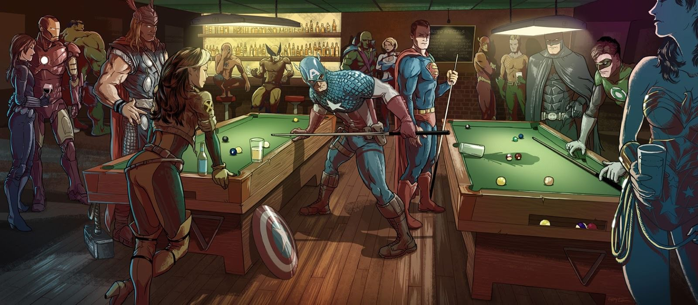

El término cómic es utilizado para designar a aquellas formas de relato gráfico que se arman en base a dibujos encuadrados en viñetas. El cómic también puede ser conocido como historieta o tebeo dependiendo del lugar o región en la que se haga referencia a él. El cómic es una forma de arte que se ha popularizado especialmente en el siglo XX aunque podemos encontrar varios antecedentes de esta forma de relato en otros tiempos de la historia.
El comic puede ser definido como un relato que se arma principalmente en base a dibujos o imágenes. El mismo puede contar o no con texto pero aunque lo haga, el texto nunca ocupa un rol principal frente a los dibujos como sí lo hace en otras formas de relato tales como la novela o la poesía. El segundo plano que tiene el texto en esta forma gráfica se complementa con otros elementos tales como símbolos, onomatopeyas, formas expresivas, etc. El cómic se diagrama normalmente en viñetas (que pueden estar marcadas o no) dentro de las cuales sucede un acto o diálogo. Cada viñeta representa un momento específico de la situación contada, como también puede representar diferentes situaciones. Por lo general, es por todo esto considerado una forma de arte aunque para muchos lo sea de modo alternativo (es decir, no siguiendo los cánones tradicionales).
La presencia y popularización del cómic se debió en gran parte a su llegada al público masivo a través de la publicación de revistas, periódicos y otros medios accesibles de información. Los artistas de historietas y cómics se volvieron especialmente populares entre los niños a pesar de que muchas de las historietas estaban dirigidas a los adultos.
En los cómics podemos encontrar un sinfín de temáticas y modos de representar cada escena. Sin embargo, son populares las historias de superhéroes, de personajes fantásticos y míticos, las situaciones exageradas, absurdas, llenas de expresividad (violencia, temor, amor, pasión).
